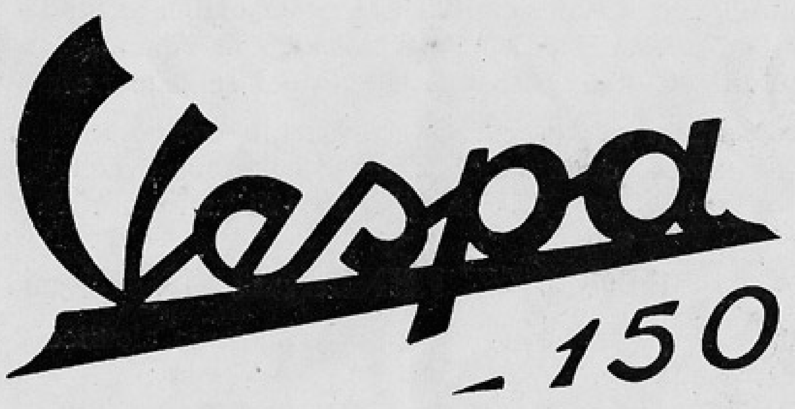
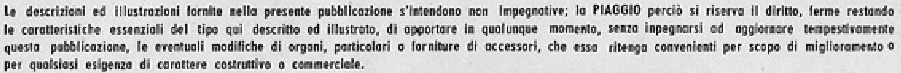
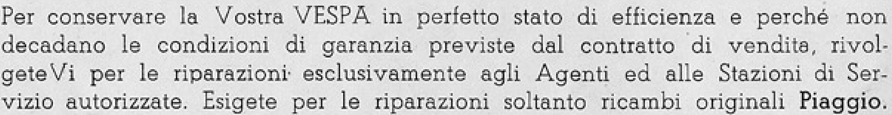
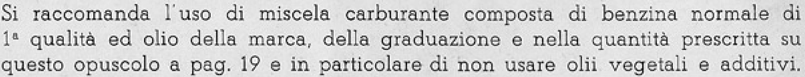
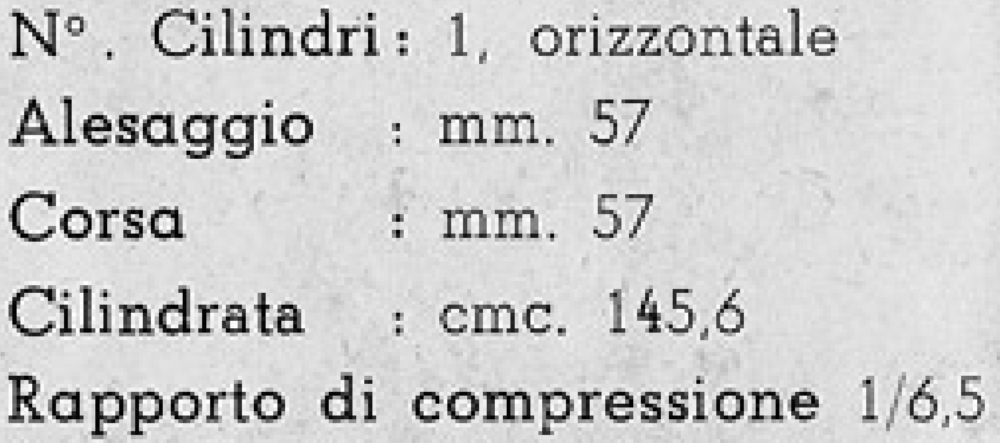
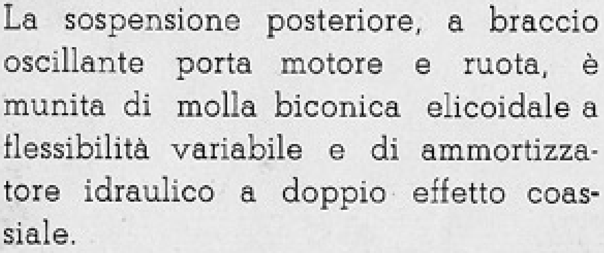
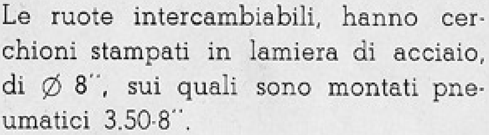
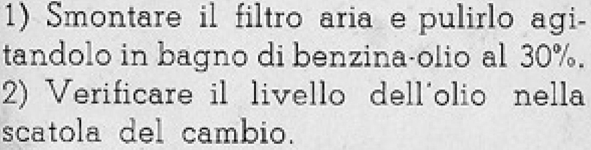
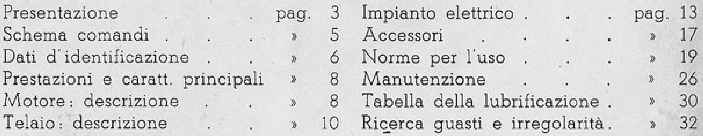
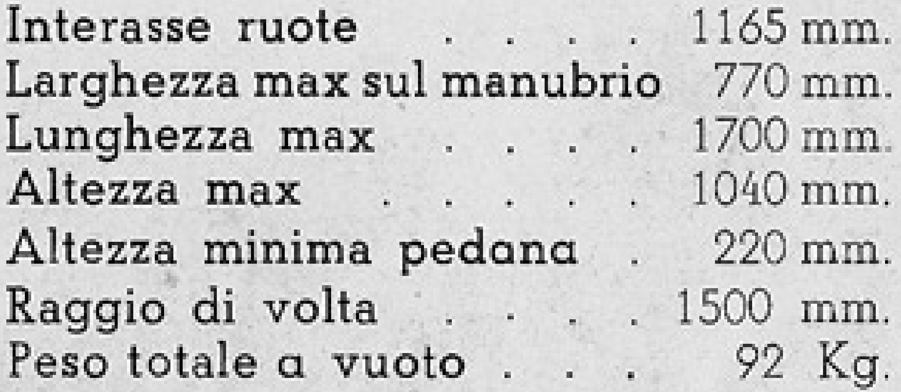

Image-verified reference
Vespa 150
← Document studio · Hybrid candidate preview · Full scored evidence · Weights, hashes and runtime
Local paired experiment · 31 October 2026 · no cloud inference
LightOnOCR-3-1B reduces text content CER from 2.40% to 0.36% on this diagnostic sample. Its table words are correct, but it loses structured cells. Paddle preserves dimensions but drops ditto cells and shifts values. Neither new model is reliable for the logo or every figure number.
This is a small, purposively selected diagnostic set, not a random accuracy estimate. The existing baseline is saved pipeline output, not a freshly rerun dots model. Nine ordinary text/caption/specification crops, one logo and two tables are judged separately. The logo and figure-number failure remain visible below.
References were transcribed directly from images before generation; three difficult references received an independent image-only second review. Identical PNG bytes were sent to both models at temperature 0, seed 42, 4096-token output budget. LightOn received image-only prompts; Paddle received OCR: or Table Recognition:. The servers apply their own documented vision preprocessing.
Strict CER is Levenshtein character distance/reference length after removing transport markup and line-wrap hyphenation. Content CER also case-folds and ignores punctuation. WER uses content-normalized words. Decimal/unit numbers are checked separately. Table score requires the right text in the right cell, with extra cells penalized; HTML, Markdown and unmerged Paddle OTSL are parsed without inventing omitted cells. This is not TEDS or a page-layout benchmark.
Figure 16 in the carter reference is visually read as 16 by two image reviewers; all OCR outputs say 15. Treat that digit as a review item. With that crop excluded, the text ranking is unchanged. The logo reference ignores its decorative flourish.
| Engine | Strict text CER ↓ | Content CER ↓ | WER ↓ | Exact table cells ↑ | Numeric crops ↑ | Median crop latency |
|---|---|---|---|---|---|---|
| Existing dots output | 2.50% | 2.40% | 6.54% | 98% | 4/5 | not measured |
| LightOnOCR-3-1B Q8_0 | 0.41% | 0.36% | 0.77% | 0% | 4/5 | 0.594 s |
| PaddleOCR-VL-1.6 BF16 | 2.04% | 1.50% | 6.92% | 52% | 4/5 | 1.161 s |
Character metrics cover ten non-table crops (1,670 content characters); tables cover 50 cells. Latency is local HTTP + server-side vision encoding + generation, excluding model loading and client payload preparation. One pass, mixed prompt-cache state, not a cold-start throughput study. GPU: RTX A5000 Laptop 16 GB; native llama.cpp build 124/e71b805. LightOn uses a community Q8_0 conversion with BF16 projector; Paddle uses official BF16 GGUF.
155 eligible text blocks were re-OCR'd across all 36 pages with no request failures, about 76 seconds of summed request time. 84 records were protected/skipped, including tables, figures, abandon and titles. Existing tables and the source JSON are unchanged. This preview is an unreviewed candidate, not an automatic production replacement. A further caption spot-check still changes “della” to “delle” (page 30): newer is not universally correct.
vespa_manual_0 · logo · SHA-256 d3691094bcaf9a5d3a78c7715ca7cacfc3ff15034937b2165561f4285e61b5b7

Decorative flourish before 150 is not text; image reads 150, not 1500.
Vespa 150
Strict CER: 133.33% · content CER: 133.33%
Vasco da Gamas 1500
Strict CER: 55.56% · content CER: 55.56%
Coral 150Raw response + timings
Strict CER: 33.33% · content CER: 33.33%
Lapa 150Raw response + timings
vespa_manual_1 · text · SHA-256 6fa0d3b8f804b17e27a309117de0ffd897c170460f4bc800042df44cc93588ee

Le descrizioni ed illustrazioni fornite nella presente pubblicazione s'intendono non impegnative; la PIAGGIO perciò si riserva il diritto, ferme restando le caratteristiche essenziali del tipo qui descritto ed illustrato, di apportare in qualunque momento, senza impegnarsi ad aggiornare tempestivamente questa pubblicazione, le eventuali modifiche di organi, particolari o forniture di accessori, che essa ritenga convenienti per scopo di miglioramento o per qualsiasi esigenza di carattere costruttivo o commerciale.
Strict CER: 3.86% · content CER: 3.73%
Le descrizioni ed illustrazioni fornite alla presente pubblicazione s'intendono non Impegnative; la P IAGGIO perciò si riserva il diritto, ferme restando le caratteristiche essenziali del tipo quel descritto ed illustrato, di opportare la qualunque momento, senza inpegarsi ed aggiungevole tempestivamente questo pubblicazione, le eventuali modifiche di organi, particolari o forniture di accessori, che essa ritenga convenienti per scopo di miglioramento o per qualsiasi esigenza di carattere costruttivo o commerciale.
Strict CER: 0.00% · content CER: 0.00%
Le descrizioni ed illustrazioni fornite nella presente pubblicazione s'intendono non impegnative; la PIAGGIO perciò si riserva il diritto, ferme restando le caratteristiche essenziali del tipo qui descritto ed illustrato, di apportare in qualunque momento, senza impegnarsi ad aggiornare tempestivamente questa pubblicazione, le eventuali modifiche di organi, particolari o forniture di accessori, che essa ritenga convenienti per scopo di miglioramento o per qualsiasi esigenza di carattere costruttivo o commerciale.Raw response + timings
Strict CER: 2.51% · content CER: 2.55%
Le descrizioni ed illustrazioni fornite nella presente pubblicazione s'intendono non impegnative; la PIAGGIO perciò si riserva il diritto, ferme restando le caratteristiche essenziali del tipo qui descritto ed illustrato, di opportare in qualunque momento, senza inpegnarsi ed aggiornare tempestivamente questa pubblicazione, le eventuali modifiche di organi, particolari o l'ornature di accessori, che essa ritezza convenienti per scopo di miglioramento per qualsiasi esigenza di corattere costruttivo o commercle.Raw response + timings
vespa_manual_1 · text · SHA-256 fd00ff3fa23bbc4ff657335dae7ab077eb31e850ab85b386590c3f791d073261

Per conservare la Vostra VESPA in perfetto stato di efficienza e perché non decadano le condizioni di garanzia previste dal contratto di vendita, rivol- geteVi per le riparazioni esclusivamente agli Agenti ed alle Stazioni di Ser- vizio autorizzate. Esigete per le riparazioni soltanto ricambi originali Piaggio.
Strict CER: 0.00% · content CER: 0.00%
Per conservare la Vostra VESPA in perfetto stato di efficienza e perché non decadano le condizioni di garanzia previste dal contratto di vendita, rivol- geteVi per le riparazioni esclusivamente agli Agenti ed alle Stazioni di Ser- vizio autorizzate. Esigete per le riparazioni soltanto ricambi originali Piaggio.
Strict CER: 0.00% · content CER: 0.00%
Per conservare la Vostra VESPA in perfetto stato di efficienza e perché non decadano le condizioni di garanzia previste dal contratto di vendita, rivol- geteVi per le riparazioni esclusivamente agli Agenti ed alle Stazioni di Ser- vizio autorizzate. Esigete per le riparazioni soltanto ricambi originali Piaggio.Raw response + timings
Strict CER: 0.00% · content CER: 0.00%
Per conservare la Vostra VESPA in perfetto stato di efficienza e perché non decadano le condizioni di garanzia previste dal contratto di vendita, rivol- geteVi per le riparazioni esclusivamente agli Agenti ed alle Stazioni di Servizio autorizzate. Esigete per le riparazioni soltanto ricambi originali Piaggio.Raw response + timings
vespa_manual_1 · text · SHA-256 b13c572401b4cf7285940187564df614cb83fb54969391d8eec95ba48770069c

Si raccomanda l'uso di miscela carburante composta di benzina normale di 1ª qualità ed olio della marca, della graduazione e nella quantità prescritta su questo opuscolo a pag. 19 e in particolare di non usare olii vegetali e additivi.
Strict CER: 0.00% · content CER: 0.00%
Si raccomanda l'uso di miscela carburante composta di benzina normale di 1ª qualità ed olio della marca, della graduazione e nella quantità prescritta su questo opuscolo a pag. 19 e in particolare di non usare olii vegetali e additivi.
Strict CER: 0.00% · content CER: 0.00%
Si raccomanda l’uso di miscela carburante composta di benzina normale di 1ª qualità ed olio della marca, della graduazione e nella quantità prescritta su questo opuscolo a pag. 19 e in particolare di non usare olii vegetali e additivi.Raw response + timings
Strict CER: 3.83% · content CER: 1.29%
Si raccomanda l'uso di miscela carburante composta di benzina normale di \(1^{a}\) qualità ed olio della marca, della graduzione e nella quantità prescritta su questo opuscolo a pag. 19 e in particolare di non usare olii vegetali e additivi.Raw response + timingsvespa_manual_7 · specifications · SHA-256 c53215ddd721526401db3a5f2199d04b9ce986c94cac9b9944651792fdac5e2e

Raised circle after N ambiguous between degree and ordinal; excluded by content normalization.
N°. Cilindri : 1, orizzontale Alesaggio : mm. 57 Corsa : mm. 57 Cilindrata : cmc. 145,6 Rapporto di compressione 1/6,5
Strict CER: 0.85% · content CER: 0.00%
N°. Cilindri: 1, orizzontale Alesaggio : mm. 57 Corsa : mm. 57 Cilindrata : cmc. 145,6 Rapporto di compressione 1/6,5
Strict CER: 0.85% · content CER: 0.00%
N°. Cilindri: 1, orizzontale Alesaggio : mm. 57 Corsa : mm. 57 Cilindrata : cmc. 145,6 Rapporto di compressione 1/6,5Raw response + timings
Strict CER: 4.24% · content CER: 0.96%
Nº. Cilindri: 1, orizzontale Alesaggio: mm. 57 Corsa: mm. 57 Cilindrata: cmc. 145,6 Rapporto di compressione 1/6,5Raw response + timings
vespa_manual_10 · text · SHA-256 c7928a9039fadbb34541788b28456c3379d196c8595303ab06161a544b94a9b0

La sospensione posteriore, a braccio oscillante porta motore e ruota, è munita di molla biconica elicoidale a flessibilità variabile e di ammortizza- tore idraulico a doppio effetto coas- siale.
Strict CER: 0.00% · content CER: 0.00%
La sospensione posteriore, a braccio oscillante porta motore e ruota, è munita di molla biconica elicoidale a flessibilità variabile e di ammortizzatore idraulico a doppio effetto coassiale.
Strict CER: 0.00% · content CER: 0.00%
La sospensione posteriore, a braccio oscillante porta motore e ruota, è munita di molla biconica elicoidale a flessibilità variabile e di ammortizza- tore idraulico a doppio effetto coas- siale.Raw response + timings
Strict CER: 2.11% · content CER: 2.14%
La sospensione posteriore, a braccio oscillante porta motore e ruota, è munita di molla biconica elicoidale a flessibilità variabile e di ammortizzare tore idraulico a doppio effetto coasiale.Raw response + timings
vespa_manual_10 · text · SHA-256 754f307171eb8dd7afefe61ac7d00f4de5700120de33f3ee35d628d0bdbb11ce

Le ruote intercambiabili, hanno cer- chioni stampati in lamiera di acciaio, di Ø 8", sui quali sono montati pne- umatici 3.50-8".
Strict CER: 0.00% · content CER: 0.00%
Le ruote intercambiabili, hanno cer- chioni stampati in lamiera di acciaio, di Ø 8", sui quali sono montati pne- umatici 3.50-8".
Strict CER: 0.00% · content CER: 0.00%
Le ruote intercambiabili, hanno cer- chioni stampati in lamiera di acciaio, di Ø 8", sui quali sono montati pne- umatici 3.50-8".Raw response + timings
Strict CER: 0.00% · content CER: 0.00%
Le ruote intercambiabili, hanno cerchioni stampati in lamiera di acciaio, di Ø 8", sui quali sono montati pneumatici 3.50-8".Raw response + timings
vespa_manual_19 · caption · SHA-256 35dadc305a0f983e52aaf5cadb79f3e7d427262075f87a161a500dc51e85b1a6
Fig. 10 - Posizioni del rubinetto miscela
Strict CER: 4.88% · content CER: 5.26%
Fig. 10 - Posizioni del rubinello miscela
Strict CER: 0.00% · content CER: 0.00%
Fig. 10 - Posizioni del rubinetto miscelaRaw response + timings
Strict CER: 0.00% · content CER: 0.00%
Fig. 10 - Posizioni del rubinetto miscelaRaw response + timings
vespa_manual_26 · text · SHA-256 0bf5430c7e7e1c6c17b3f21a0fcbd8284d080ca0c15b0d4e7c4e3a4e669849d8

1) Smontare il filtro aria e pulirlo agi- tandolo in bagno di benzina-olio al 30%. 2) Verificare il livello dell'olio nella scatola del cambio.
Strict CER: 0.00% · content CER: 0.00%
1) Smontare il filtro aria e pulirlo agitandolo in bagno di benzina-olio al 30%. 2) Verificare il livello dell'olio nella scatola del cambio.
Strict CER: 0.00% · content CER: 0.00%
1) Smontare il filtro aria e pulirlo agi- tandolo in bagno di benzina-olio al 30%. 2) Verificare il livello dell'olio nella scatola del cambio.Raw response + timings
Strict CER: 0.00% · content CER: 0.00%
1) Smontare il filtro aria e pulirlo agitandolo in bagno di benzina-olio al 30%. 2) Verificare il livello dell'olio nella scatola del cambio.Raw response + timings
vespa_manual_26 · caption · SHA-256 5d4ab2e3cd24195d8cc05988623f201fb430748364a61444d12466708cda6e7c
Fig. 16 - Livello olio nel carter
Strict CER: 24.24% · content CER: 23.33%
Fig. 15 - Livello olio nel cartoncino.
Strict CER: 3.03% · content CER: 3.33%
Fig. 15 - Livello olio nel carterRaw response + timings
Strict CER: 3.03% · content CER: 3.33%
Fig. 15 - Livello olio nel carterRaw response + timings
vespa_manual_1 · table · SHA-256 b0012403c8a9cc334cc4b7ae9884b010a5e4960237eab33b1804bbf82ad2573e

Leaders are decorative. Six rows with two three-column sections; ditto marks are real cells.
Presentazione | pag. | 3 | Impianto elettrico | pag. | 13 Schema comandi | » | 5 | Accessori | » | 17 Dati d'identificazione | » | 6 | Norme per l'uso | » | 19 Prestazioni e caratt. principali | » | 8 | Manutenzione | » | 26 Motore: descrizione | » | 8 | Tabella della lubrificazione | » | 30 Telaio: descrizione | » | 10 | Ricerca guasti e irregolarità | » | 32
Exact positioned cells: 35/36 · table text CER: 0.36%
<table><tr><td>Presentazione</td><td>pag.</td><td>3</td><td>Impianto elettrico</td><td>pag.</td><td>13</td></tr><tr><td>Schema comandi</td><td>»</td><td>5</td><td>Accessori</td><td>»</td><td>17</td></tr><tr><td>Dati d'identificazione</td><td>»</td><td>6</td><td>Norme per l'uso</td><td>»</td><td>19</td></tr><tr><td>Prestazioni e caratt. principali</td><td>»</td><td>8</td><td>Manutenzione</td><td>»</td><td>26</td></tr><tr><td>Motore: descrizione</td><td>»</td><td>8</td><td>Tabella della lubrificazione</td><td>»</td><td>30</td></tr><tr><td>Telaio: descrizione</td><td>»</td><td>10</td><td>Riçerca guasti e irregolarità</td><td>»</td><td>32</td></tr></table>
Exact positioned cells: 0/36 · table text CER: 0.00%
Presentazione . . . . pag. 3 Impianto elettrico . . . . pag. 13 Schema comandi . . . . » 5 Accessori . . . . » 17 Dati d'identificazione . . . » 6 Norme per l'uso . . . . » 19 Prestazioni e caratt. principali » 8 Manutenzione . . . . » 26 Motore: descrizione . . . » 8 Tabella della lubrificazione . » 30 Telaio: descrizione . . . » 10 Ricerca guasti e irregolarità . » 32Raw response + timings
Exact positioned cells: 13/36 · table text CER: 2.17%
<fcel>Presentazione<fcel>pag.<fcel>3<fcel>Impianto elettrico<fcel>pag.<fcel>13<nl><fcel>Schema comandi<fcel>5<fcel>Accessori<fcel>17<ecel><fcel>17<nl><fcel>Dati d'identificazione<fcel>6<fcel>Norme per l'uso<fcel>19<ecel><fcel>19<nl><fcel>Prestazioni e caratt. principali<fcel>8<fcel>Manutenzione<fcel>26<ecel><ecel><nl><fcel>Motore: descrizione<fcel>8<fcel>Tabella della lubrificazione<fcel>30<ecel><ecel><nl><fcel>Telaio: descrizione<fcel>10<fcel>Ricerca guasti e irregolarità<fcel>32<ecel><ecel><nl>Raw response + timings
vespa_manual_7 · table · SHA-256 9949f569141afb8bdba90a19a8ca53beac611610014788a497197acc6ebb79a9

Seven rows, two columns; leaders are decorative.
Interasse ruote | 1165 mm. Larghezza max sul manubrio | 770 mm. Lunghezza max | 1700 mm. Altezza max | 1040 mm. Altezza minima pedana | 220 mm. Raggio di volta | 1500 mm. Peso totale a vuoto | 92 Kg.
Exact positioned cells: 14/14 · table text CER: 0.00%
<table>
<tbody>
<tr>
<td>Interasse ruote</td>
<td>1165 mm.</td>
</tr>
<tr>
<td>Larghezza max sul manubrio</td>
<td>770 mm.</td>
</tr>
<tr>
<td>Lunghezza max</td>
<td>1700 mm.</td>
</tr>
<tr>
<td>Altezza max</td>
<td>1040 mm.</td>
</tr>
<tr>
<td>Altezza minima pedana</td>
<td>220 mm.</td>
</tr>
<tr>
<td>Raggio di volta</td>
<td>1500 mm.</td>
</tr>
<tr>
<td>Peso totale a vuoto</td>
<td>92 Kg.</td>
</tr>
</tbody>
</table>Exact positioned cells: 0/14 · table text CER: 0.00%
Interasse ruote . . . . . 1165 mm. Larghezza max sul manubrio 770 mm. Lunghezza max . . . . . 1700 mm. Altezza max . . . . . 1040 mm. Altezza minima pedana . 220 mm. Raggio di volta . . . . . 1500 mm. Peso totale a vuoto . . . . 92 Kg.Raw response + timings
Exact positioned cells: 13/14 · table text CER: 0.56%
<fcel>Interasse ruote<fcel>1165 mm.<nl><fcel>Larghezza max sul manubrio<fcel>770 mm.<nl><fcel>Lunghezza max<fcel>1700 mm.<nl><fcel>Altezza max<fcel>1040 mm.<nl><fcel>Altezza minima pedona<fcel>220 mm.<nl><fcel>Raggio di volta<fcel>1500 mm.<nl><fcel>Peso totale a vuoto<fcel>92 Kg.<nl>Raw response + timings